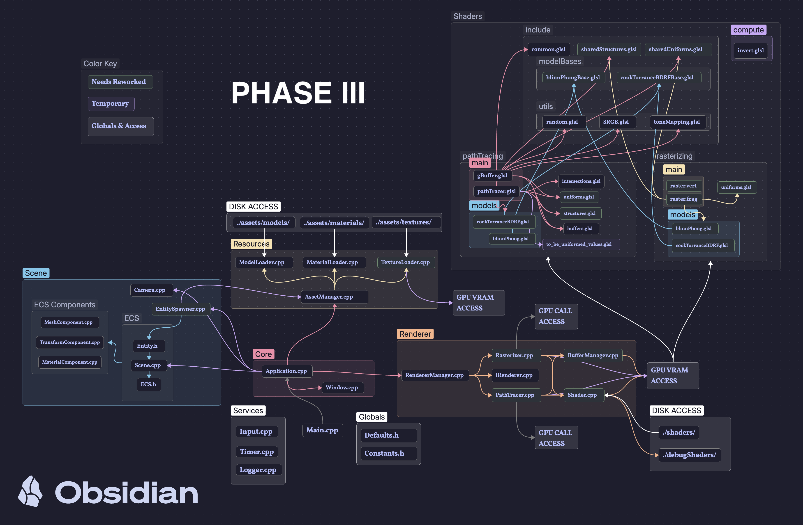
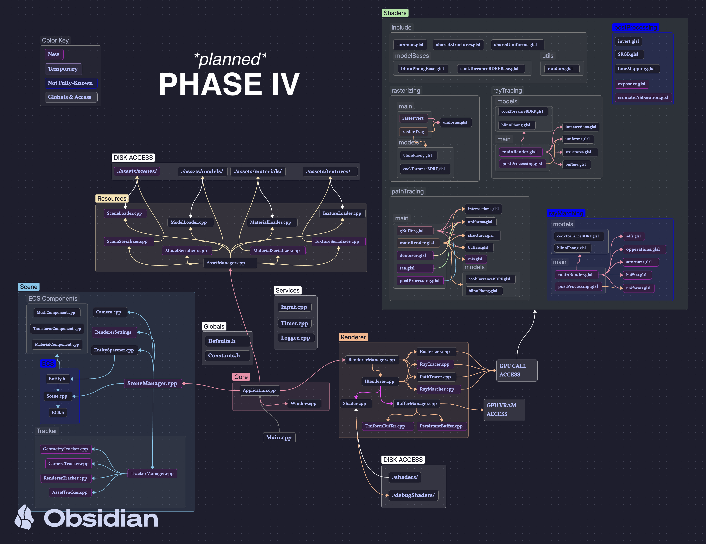

I am a graphics software developer focused on physics-based rendering pipelines. I not only do solo-development, but I am also the Lead Programmer for the "Perkins Pirates Robotics" FRC Team (Team Number 7165).
Notably, I was honored as the OH-09 Congressional App Challenge Winner for my previous educational rendering sandbox, "Light Teachings". That project was the stepping stone to "Tempname: Engine".
Project Description
Overview & Features
Tempname: Engine is a GPU-rendering engine built for versitility, education, and stylized renders. Whereas most Engines throw you with 1 or 2 rendering engines to get images built for it, Tempname: Engine will have multiple renderers packed full with the tools you need to get the render just as you like it.
Engine architecture prioritized strict modular abstraction layers from day one to mitigate spaghetti-code vulnerabilities. Features a ruggedized asset pipeline supporting multi-format object representations (.obj, .mat, and multi-channel textures) seamlessly decoupled from execution render context structures.
Development Phase Tree
Project Stardance: Online Engine Demos
HackClub WorkspaceWebGL algorithmic verification scripts designed on Shadertoy to parse rendering mathematics prior to architectural C++ conversion loops.
Core Architecture & Project Stardance Mission
Engine System Blueprints
Visual layouts tracking the transition from decoupled backend proof-of-concepts to an unified execution pipeline.

Phase-III Foundation Diagram
Phase-IV Layout Schema.obj ingestion to frame-buffer composite layers.
Project Stardance Evaluation Framework
Reviewer GuideThis environment is designed for transparency. We isolate foundational platform planning from active feature builds to show exactly how development translates into the core evaluation metrics:
Originality
Bypasses standard, rigid render constraints by combining diverse ray and raster algorithms natively.
Technicality
Engineered with native C++, explicit GLSL shader layout contexts, and strict memory abstraction boundaries.
Usability
Focuses on progressive disclosure. Features scale smoothly from accessible tool sets to advanced systems.
Storytelling
Maintains clear branch state lines, verbose Git logs, and transparent code transition mapping.
Phase-III Value Capture: Verified performance baselines and structural models. Moving directly into Phase-IV to deploy complex shaders and production features.